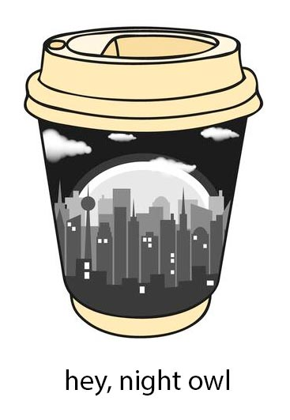

JS Lab 02.04
Date Object
See script tag in this html file for lab assignment.
As you work, check the console for output and red error messages.
Please check Lab Solution file only after giving the Lab your best effort!
TIMELY GREETING GOES HERE

Today's date is:
Activities